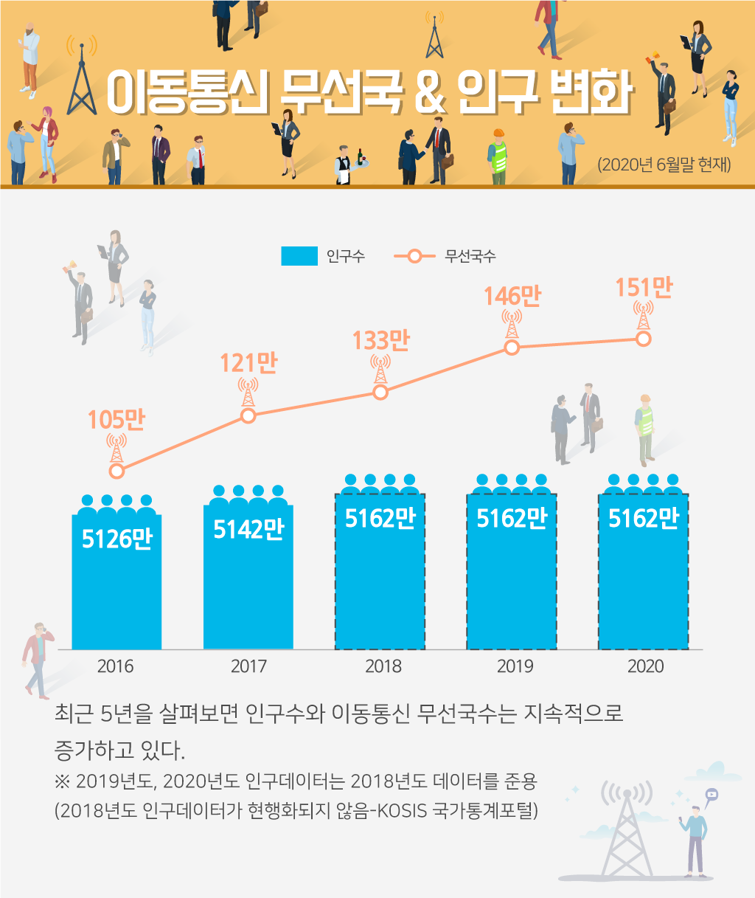
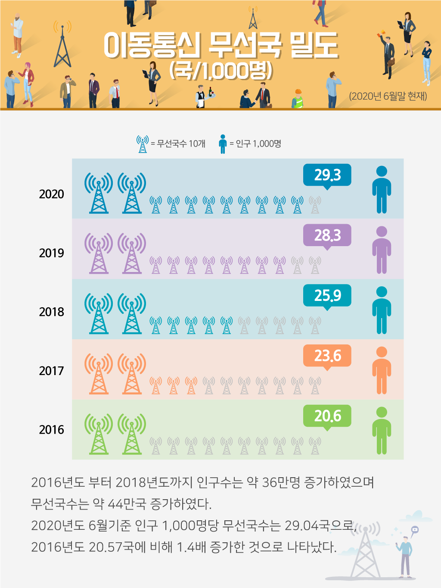

이동통신 무선국수는 지속적으로 증가추세를 보이고 있으며, 이동통신 무선국수는 2016년도에 최초로 100만국을 돌파하였고 2020년 6월 기준 약 150만국까지 증가하였다.

최근 5년을 살펴보면 인구수와 이동통신 무선국수는 지속적으로 증가하고 있다. ※ 2019년도, 2020년도 인구데이터는 2018년도 데이터를 준용 (2018년도 인구데이터가 현행화되지 않음-KOSIS 국가통계포털)

2016년도 부터 2018년도까지 인구수는 약 36만명 증가하였으며 무선국수는 약 44만국 증가하였다. 2020년도 6월기준 인구 1,000명당 무선국수는 29.04국으로, 2016년도 20.57국에 비해 1.4배 증가한 것으로 나타났다.